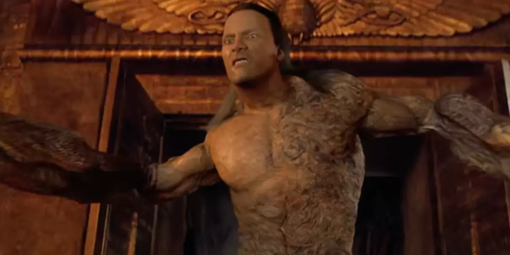
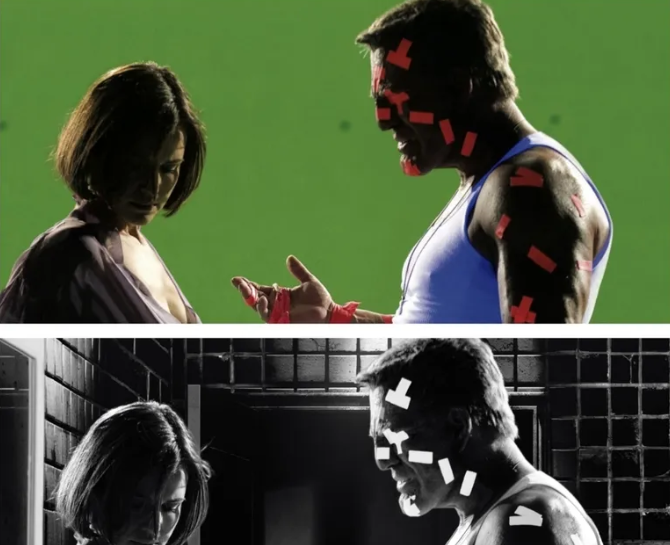

Что такое компьютерная графика

Компьютерная графика (computer-generated imagery, CGI) - это неподвижные или движущиеся изображения, сгенерированные компьютером. Можно выделить двухмерную и трехмерную графику.
Доисторические времена
До появления цифровых технологий спецэффекты в кино включали такие техники, как миниатюры, комбинированные съемки и покадровая анимации. К примеру, миниатюры использовались для создания масштабных сцен, таких как разрушение городов, а покадровая анимация применялась для оживления фантастических существ. Двойная экспозиция и matte painting позволяли комбинировать отснятые кадры с нарисованными фонами или другими элементами.
Головокружение (1958)
Первым фильмом с элементами компьютерной графики можно считать «Головокружение» Альфреда Хичкока. Для фильма были созданы титры, в которых обыгрывался спуск по бесконечной лестнице.
Мир Дикого Запада
(1973)
В 1973 выходит фильм «Мир Дикого Запада» (Westworld), в котором впервые совместили цифровую анимацию с реальными съёмками. Пикселизированная картинка использовалась чтобы показать мир глазами андроида.
Трон (1982)
Первый фильм с продолжительной (около 15 минут) сценой полностью сгенерированной на компьютере (гонки на светоциклах).
Фильм был номинирован на Оскар в двух номинациях: лучший дизайн костюмов и лучший звук. Академия специально не стала включать «Трон» в номинацию на лучшие визуальные эффекты, потому что столь сильное использование компьютеров можно считать обманом.
Властелин Колец: Две Крепости
(2002)
Один из первых фильмов с реалистичным полностью анимированным персонажем, который активно взаимодействует с актерами в кадре. Для создания Голлума использовалась технология motion capture (захват движения).
Аватар (2009)
Фильм Джеймса Кэмерона «Аватар» (2009) стал переломным моментом для компьютерной графики в кино. В фильме была создана реалистичная флора и фауна Пандоры, для создания персонажей использовалась усовершенствованная технологии motion capture.
Моделирование
Моделирование 3D-объектов для кино включает создание цифровых моделей с использованием полигональной сетки, которая формируют форму и детали объекта.
Matte painting
Создание фонов, в основном без сложного моделирования трехмерных сцен. Matte painting использовался еще в эпоху доцифровых технологий (отсюда и происходит название).

Шейдинг и текстурные карты
Шейдинг и текстурные карты используются для того, чтобы придать 3D-объектам реалистичные свойства, такие как цвет, блеск и матовость, управляя тем, как они взаимодействуют со светом. Текстурные карты позволяют детализировать участки модели, задавая параметры вроде отражений и прозрачности, создавая впечатление сложных материалов.

Свет
Свет в компьютерной графике играет критически важную роль в создании реалистичных изображений, так как он определяет, как объекты выглядят в сцене и взаимодействуют друг с другом. Используются различные технологии, такие как глобальное освещение, трассировка лучей и запеченные карты света.
Рендер и композитинг
Рендеринг в кино — это процесс создания финальных изображений или анимации на основе 3D-моделей и эффектов, что позволяет превратить цифровые данные в реалистичные сцены. Композитинг объединяет эти сгенерированные элементы с отснятыми кадрами, создавая единый визуально целостный кадр.